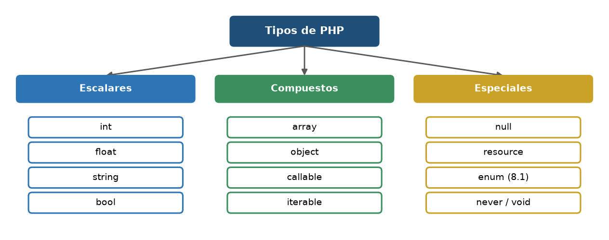
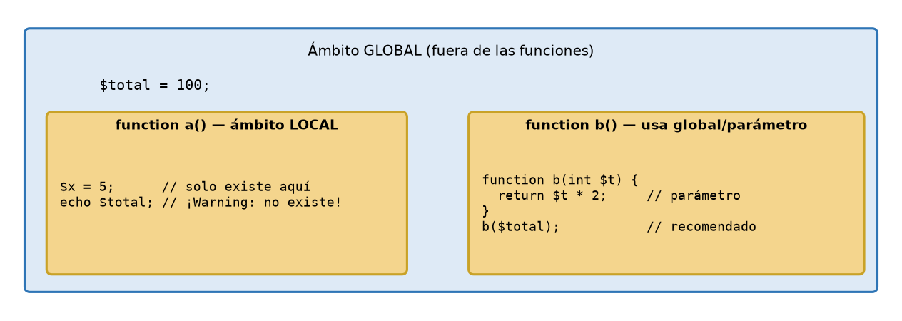
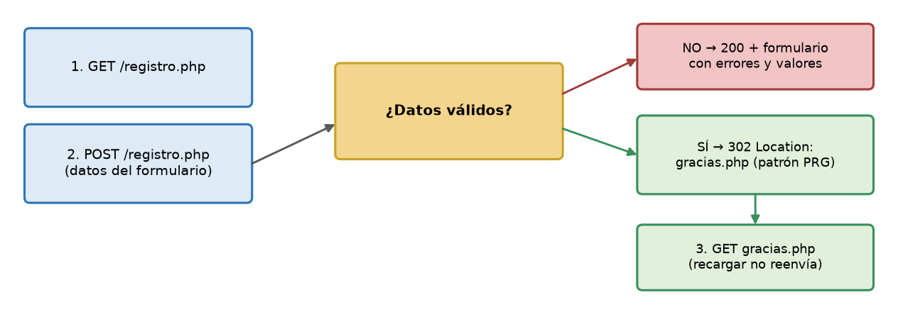
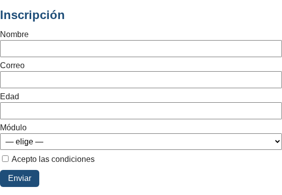
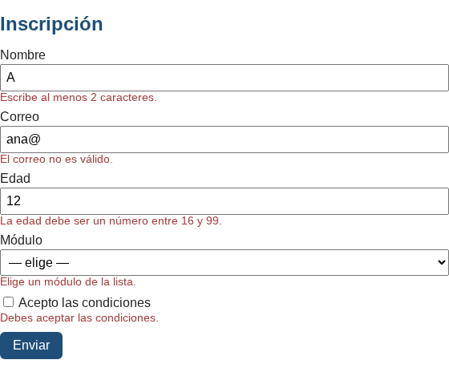
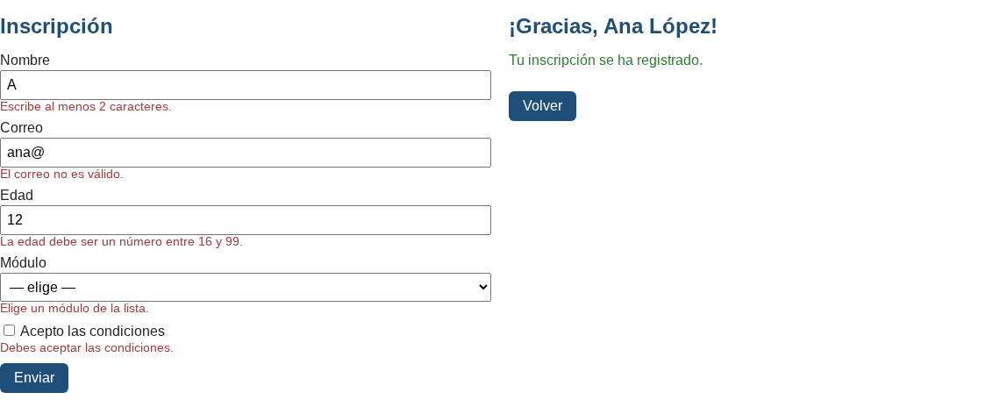

Inicio › UT2
Qué se trabaja
- Variables, tipos, estructuras de control, arrays y funciones.
- Formularios:
$_GET,$_POST, validación y saneado de datos. - Programación orientada a objetos: clases, herencia, interfaces, enums.
Pruébalo en el laboratorio
UT2 · Tipos y arraysUT2 · Funciones, tipos y strict_typesUT2 · Formulario procesado con GETUT2 · Validación de un registro (POST)UT2 · Clases, herencia e interfacesUT2 · Enums, match y readonly (PHP 8.x)
Figuras y capturas





